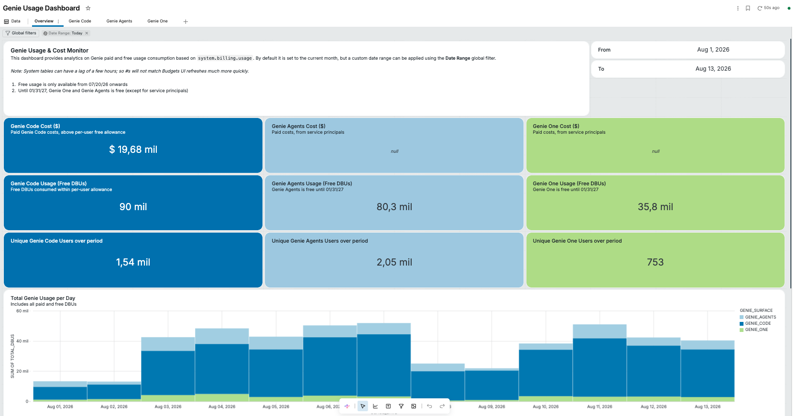

O que é (e o que não é) o Genie Code
O Genie Code é o assistente de codificação e trabalho com dados agêntico da Databricks - a evolução do que antes se chamava Databricks Assistant. Ele entende o contexto do workspace (metadados do Unity Catalog, código, amostras de dados e resultados de execução) para gerar e executar código, depurar erros, construir pipelines e dashboards e trabalhar através das superfícies da plataforma.
Diferente de um autocomplete de IDE genérico, o Genie Code é um agente nativo da plataforma de dados: ele planeja tarefas multi-passo, descobre dados, edita ativos, executa trabalho, lê resultados, corrige problemas e pode se estender via Skills e MCP.
Não confunda os "Genies"
Antes de treinar o time, alinhe a terminologia - é uma fonte comum de confusão e de esforço desperdiçado:
| Termo | O que é | Para quem |
|---|---|---|
| Genie Code | Assistente de código/dados agêntico (foco deste guia) | Engenheiros, cientistas de dados, analistas técnicos |
| Genie One | Experiência conversacional para usuários de negócio perguntarem sobre dados em linguagem natural | Usuários de negócio |
| Genie Agents (Antiga Salas Genie) | Ambientes de domínio com dados, métricas e regras curados que respondem perguntas em linguagem natural sobre um conjunto de tabelas/dashboards e alimentam o Genie One | Times de dados que curam o contexto (consumido por analistas e negócio) |
| Databricks Assistant | Nome anterior do Genie Code | - |
Este documento trata de Genie Code. Sempre que alguém disser apenas "Genie", confirme se o contexto é codificação (Genie Code) ou consulta de negócio (Genie One / Genie Agents).
Modo agente é o padrão
Atualmente, o Genie Code opera em Agent mode por padrão (o seletor Chat/Agent anterior foi descontinuado). Isso significa que, por padrão, ele planeja e executa - não apenas responde. Se você quiser apenas uma explicação sem execução, peça explicitamente: "Apenas me explique, não rode nenhum código."
Onde o Genie Code atua: superfícies suportadas
O Genie Code está disponível através da plataforma. Cada superfície tem um agente especializado por trás:
| Superfície | O que o Genie Code faz ali |
|---|---|
| Notebooks | Gera Python/SQL, executa células, EDA, forecasting, fluxos de ML, depura erros |
| SQL Editor | Cria e otimiza consultas, encontra tabelas/consultas relevantes |
| Lakeflow Pipelines Editor | Cria/modifica pipelines multi-arquivo, roda updates, diagnostica falhas e itera correções |
| AI/BI Dashboard | Encontra dados, cria datasets e visualizações, configura filtros e organiza páginas |
| MLflow | Analisa, depura, avalia e melhora aplicações de IA |
| File editor | Edita arquivos do workspace |
| Genie Code em página inteira | "Centro de comando" com abas de ativos, chats persistentes e múltiplas conversas simultâneas |
Boas práticas de superfície
- Use a página inteira (full-page) para trabalho exploratório longo e multi-arquivo; use o painel inline no notebook para edições pontuais.
- O painel lateral costuma ter melhor desempenho de autocomplete do que o autocomplete inline dentro da célula.
- Aproveite múltiplas abas de chat para paralelizar tarefas independentes - chats em segundo plano continuam rodando ao trocar de aba.
Modelo de custo: por que padronização = economia
Entender o modelo de cobrança deixa claro por que padronizar com instruções e skills reduz o consumo (DBU).
Como o Genie Code é cobrado
- Franquia gratuita: cada usuário identificado (não service principals) recebe 150 DBUs grátis por mês, que reiniciam no primeiro dia de cada mês.
- Pay-as-you-go: o uso acima da franquia é medido em DBUs, no SKU de Serverless Real-Time Inference (varia por região).
- Desconto promocional: até 31 de janeiro de 2027, o Genie Code tem 25% de desconto sobre o uso cobrado acima da franquia (já embutido na medição de DBU).
- Service principals ficam fora da franquia grátis e da promoção - todo o uso deles é cobrado no preço padrão.
O custo é essencialmente proporcional ao volume de trabalho do modelo - quanto mais contexto o time reenvia, mais idas e voltas para acertar, e mais retrabalho, maior o consumo de DBU. É por isso que padronizar via Skills e instruções reduz custo: o time chega ao resultado certo em menos interações e sem colar padrões manualmente em cada prompt.
A relação direta entre "tokens" e custo
- Menos tentativas para acertar → menos DBU. Instruções e skills fazem o agente acertar de primeira.
- Menos padrões colados manualmente → o time não reescreve convenções (nomenclatura, catálogos, bibliotecas) em cada prompt; já está nas instruções/skills e é carregado de forma eficiente.
- Skills são carregadas contextualmente, apenas quando relevantes - ao contrário de despejar tudo no prompt.
3.3 · Como economizar tokens/DBU na prática
Cada passo do agente - planejar, buscar tabela, rodar código, ler resultado, corrigir - envolve trabalho do modelo, e o Genie Code é cobrado por consumo (DBU). A documentação não itemiza o DBU por ação, mas o princípio é direto: quanto mais interações e mais contexto reprocessado, maior tende a ser o consumo. Logo, economizar = reduzir idas e voltas e reduzir contexto reenviado. Táticas concretas:
| ✅ Faça (economiza) | ❌ Em vez de (desperdiça) |
|---|---|
Codificar convenções uma vez em Workspace Instructions / Skills / AGENTS.md | Recolar padrões e contexto a cada prompt |
Usar slash commands (/fix, /optimize, /explain, /doc) | Descrever a mesma tarefa em parágrafos longos |
Apontar @tabela e @skill-name exatos | Deixar o agente adivinhar/buscar (gera tool calls extras) |
| Documentar tabelas/colunas no Unity Catalog (comentários, com exemplo de dado) | Deixar o agente inferir schema/semântica (gera buscas e erros) |
| Dar objetivo específico + tabelas/colunas já no 1º prompt | Prompt vago que gera várias rodadas de esclarecimento |
| Pedir "só explique, não rode código" quando não precisa executar | Deixar o Agent mode planejar/rodar/ler resultados à toa |
Skills enxutas e focadas (só o essencial) com boa description | Skills gigantes/genéricas que inflam o contexto sempre |
| Referenciar documentos via MCP | Colar documentos/logs inteiros dentro do prompt |
| Tarefas pequenas e revisáveis (usar diffs e Accept/Reject cedo) | Mega-prompt que roda muito e gera retrabalho caro |
| Quick Fix para correção de 1 linha | Reabrir chat e reprompt longo por um typo |
| Continuar no mesmo chat com contexto já carregado para tarefa relacionada | Reexplicar todo o contexto num chat novo do zero |
| Abrir um chat novo ao trocar de assunto - o cache reaproveitado deixa de valer | Seguir no mesmo chat após mudar de assunto: relê um histórico irrelevante a cada pergunta e custa mais do que um chat novo (ver 3.4) |
Documentar tabelas e colunas no Unity Catalog - inclusive com exemplos de dado no comentário da coluna (ex.: coluna height "em formato texto, separada por hífen. Exemplo: '6-2'") - faz o Genie Code entender o schema de primeira, sem "adivinhar" nem disparar buscas extras. Uma consulta inicial como SELECT * FROM <tabela> também ajuda o agente a identificar colunas corretamente.
- Padrão no lugar certo, uma vez. Convenções vão para instruções/skills - nunca no prompt repetido.
- Seja específico e direcione com
@. Cada esclarecimento evitado é DBU economizado. - Não invoque o ciclo agêntico à toa. Peça explicação, use Quick Fix e escopo pequeno quando não precisa de execução autônoma.
Individual (prompts enxutos, slash commands, @, higiene de sessão) + estrutural (skills e instruções que evitam repetição para o time inteiro) + governança (budgets e monitoramento por usuário - seção 4). A maior economia sustentável vem da camada estrutural: uma boa skill economiza tokens de todo mundo, todo dia.
3.4 · Higiene de sessão: chats muito longos encarecem cada pergunta
Uma boa prática de economia - derivada de como a cobrança funciona, e não de uma recomendação explícita da Databricks - é não manter uma única sessão longa quando o assunto muda.
Por quê. O Genie Code é cobrado por input tokens, e cada nova pergunta reenvia o prompt + todo o histórico da conversa como entrada. Conforme o chat cresce, o histórico acumulado é reprocessado a cada pergunta - então o custo por pergunta tende a subir ao longo de uma sessão longa.
O prompt caching - documentado na FM API reference para modelos Claude hospedados pela Databricks, via os campos cache_creation_input_tokens (gravar no cache) e cache_read_input_tokens (reler do cache) - atenua isso: o histórico é gravado uma vez (cache creation) e nas perguntas seguintes é apenas relido (cache read, mais barato). Duas consequências:
- A 1ª pergunta de uma sessão tende a ser a mais cara por pergunta, porque paga a criação do cache.
- Como o histórico acumula, o volume relido cresce a cada pergunta - então, em sessões muito longas, o custo por pergunta volta a subir, mesmo com o cache ativo.
Ele reduz o custo de continuar no mesmo chat. O que encarece é o histórico acumulado sendo relido a cada pergunta. Por isso o "mesmo chat" é econômico enquanto o assunto for o mesmo; quando o assunto muda, o histórico antigo vira contexto irrelevante que você segue pagando para reler.
Trate um chat = uma tarefa/assunto. Ao mudar de assunto, abra um chat novo em vez de seguir no mesmo - assim o agente não relê um histórico que não interessa mais. Quebre trabalhos longos em sessões menores e focadas.
Governança e controles ANTES de liberar para todos
Não libere o Genie Code para toda a organização sem estes controles configurados.
4.1 · Habilitação e recursos "partner-powered"
- As capacidades agênticas dependem de partner-powered AI features habilitadas no nível de conta e workspace, região suportada e permissões adequadas do Unity Catalog.
- Se desativadas, o Genie Code continua disponível em forma reduzida, não-agêntica, usando modelos hospedados pela Databricks.
- Decisão de governança: decida conscientemente se e onde habilitar (considere requisitos de geografia/DLP do workspace).
4.2 · Permissões via Unity Catalog (o limite de segurança real)
- O Genie Code age sempre dentro das permissões do usuário no Unity Catalog. Ele não acessa dados nem executa operações além do que o usuário já pode fazer.
- Boas práticas: aplique least privilege com UC e ACLs de workspace; limite quem pode criar Genie Agents; use políticas de cluster / serverless / auto-termination para conter custo de infraestrutura.
4.3 · Modos de aprovação (controle de ações do agente)
| Modo | Comportamento |
|---|---|
| Ask every time | Pede permissão a cada ação (Allow / Skip) |
| Allow in current chat | Libera a ferramenta pelo resto da sessão |
| Always allow | Libera em todos os chats futuros |
| Auto-approve (padrão de fábrica, rotulado "Recommended") | Um classificador de IA verifica cada ação contra o seu pedido e bloqueia o que estiver fora do escopo (ex.: dropar uma tabela não mencionada, adicionar CASCADE a um DROP, ou afetar recursos compartilhados) |
"Auto-approve é um recurso de produtividade, não uma fronteira de segurança." O classificador pode aprovar ações inseguras ou bloquear ações seguras por engano. Mantenha o Auto-approve DESLIGADO ao lidar com dados de produção, workspaces sensíveis ou recursos compartilhados.
Cada usuário define seu próprio modo de aprovação clicando no ícone de engrenagem no cabeçalho do painel do Genie Code e escolhendo entre os modos da tabela acima. ⚠ Atenção: o padrão de fábrica é Auto-approve (a UI o exibe com a etiqueta "Recommended"). Ou seja, quem usa o Genie Code pela primeira vez começa no modo mais autônomo - o comportamento conservador não vem ativo por padrão e precisa ser configurado manualmente.
Oriente o time (em treinamento e nas Workspace Instructions) a alterar o modo de Auto-approve para "Ask every time" e a só reabilitar Auto-approve em dados não-produtivos, caso a caso. Não se deixe enganar pelo rótulo "Recommended" da UI: ele é uma recomendação de produtividade geral, não de segurança. Como não há um toggle de admin que force o modo para todos, trate isso como política de uso reforçada por treinamento - o controle técnico de custo/risco vem dos budgets e das permissões do Unity Catalog.
4.4 · Orçamentos (budgets) - o freio de custo
Somente admins de conta criam budgets para o Genie. Configuração:
- Crie um budget do tipo Unity AI Gateway.
- Aplique exatamente a tag - Chave:
databricks-product/ Valor:genie.AtençãoNão adicione outras tags de recurso, ou o budget deixa de rastrear o uso do Genie corretamente.
- Escopo: conta inteira, workspaces específicos, grupos de usuários ou usuários individuais.
- Defina thresholds:
- Shared threshold: pool combinado para todos no escopo; quando esgota, todos são bloqueados.
- Per-user threshold: limite mensal individual (além da franquia grátis); ao atingir, aquele usuário é bloqueado.
- Per-user overrides: limites maiores para usuários/grupos específicos (o mais permissivo prevalece quando o usuário está em vários grupos).
- Por threshold, você pode enviar alertas por e-mail e/ou bloquear o uso.
Habilite alertas no nível shared e use per-user thresholds para bloqueio.
Budgets não removem a franquia grátis de 150 DBU/usuário. Eles só atuam sobre o consumo pay-as-you-go acima da franquia.
4.5 · Monitoramento de custo (system tables)
Use as system tables como fonte da verdade para FinOps. Consulte system.billing.usage (junte com system.billing.list_prices). Colunas-chave:
billing_origin_product='GENIE'sku_name- indica uso grátis vs. cobradousage_quantity- DBUs consumidosusage_metadata.genie.surface- produto:GENIE_CODE,GENIE_ONEouGENIE_AGENTSidentity_metadata.run_as- usuário que rodou
- O SKU
GENIE_FREE_USAGErastreia todo o uso grátis: a franquia de 150 DBU/usuário e o uso gratuito de Genie One e Genie Agents (grátis até 31/01/2027). Não tem list price. Disponível a partir de 20/07/2026. O desconto de 25% do Genie Code não entra aqui - é aplicado direto no metering do SKU pago. - O uso cobrado usa o SKU Serverless Real-Time Inference (varia por região).
Construa um dashboard de FinOps no AI/BI Dashboard sobre system.billing.usage filtrando GENIE_CODE, com visões por usuário/dia, franquia restante e anomalias/picos. Configure alertas para (a) usuários se aproximando dos 150 DBU, (b) gasto total da conta e (c) picos súbitos.
Em vez de construir do zero, importe o dashboard de observabilidade de Genie (um AI/BI Dashboard) do repositório oficial databricks/tmm (System-Tables-Demo/Genie-Observability → arquivo Genie Usage Dashboard.lvdash.json). Ele visualiza o consumo geral de Genie a partir das system tables - incluindo o Genie Code.
Como usar: baixe o .lvdash.json → importe pelo AI/BI Dashboard → Import dashboard → aponte para um SQL warehouse com acesso a system.billing.* → ajuste filtros e escopo (por usuário, por workspace, franquia restante). Trate como ponto de partida e adapte às suas convenções. → github.com/databricks/tmm · Genie-Observability

GENIE_SURFACE. Fonte: databricks/tmm · Genie-Observability.As ferramentas nativas do Genie Code
Este é o "toolbox" que o time precisa dominar. Ensinar essas ferramentas reduz interações desperdiçadas.
5.1 · Atalhos e acesso inline
- Acesso inline no notebook:
Cmd+I(macOS) /Ctrl+I(Windows). - Disparo manual de autocomplete:
Option+Shift+Space(macOS) /Control+Shift+Space(Windows). Aceite comTab. - Botão "Diagnose Error" aparece quando há erro.
5.2 · Slash commands (comandos rápidos)
Comandos que evitam prompts longos - prefira-os a descrever a mesma tarefa em texto livre:
| Comando | Função |
|---|---|
/ | Lista os comandos disponíveis |
/explain | Explica o código (conciso ou linha a linha) |
/fix | Propõe correção de erro (mostra em diff) |
/doc | Comenta/documenta o código (em diff) |
/findTables | Busca tabelas relevantes (mencione "features" para feature tables) |
/findQueries | Busca consultas relevantes |
/optimize | Sugere melhorias de performance em SQL |
/prettify | Formata SQL para legibilidade |
/repairEnvironment não é um comando manualmente invocável - ele é acionado automaticamente pelo Genie Code para diagnosticar e corrigir falhas de ambiente (ex.: erro de instalação de biblioteca), acessível via ícone do Genie Code no painel de ambiente ou nos logs de pip.
Boas práticas com diff: /fix e /doc mostram as mudanças em janela de diff com Accept/Reject. Código aceito não roda automaticamente - revise antes de executar.
5.3 · Referências com @ (menções)
Use o símbolo @ (ou o botão Add Context) para apontar exatamente os recursos que o Genie Code deve considerar: tabelas, skills e outros ativos do workspace. Em notebooks, você também pode referenciar células específicas com @cell (ou via Add Context) para discutir apenas aquele trecho.
Citar @tabela correta evita que o agente "adivinhe" ou faça buscas extras - menos idas e voltas, menos DBU. Da mesma forma, @skill-name invoca uma skill sob demanda.
5.4 · Filtro de dados em linguagem natural
No resultado de uma tabela, clique no ícone de Filtro e descreva a restrição em linguagem natural (ex.: "mostre apenas registros do Brasil em 2025").
5.5 · Compute
- O Genie Code usa serverless compute por padrão; se já houver um compute selecionado na página (notebook, SQL editor), ele o utiliza.
- Usuários sem acesso a serverless precisam de um compute disponível para rodar código no painel do Genie Code.
O pilar da economia: Instruções + Skills
É aqui que o time deixa de repetir padrões e reprocessar contexto a cada conversa: em vez de colar convenções, contexto e exemplos em cada prompt, você os codifica uma vez e o Genie Code os aplica automaticamente - o que melhora a consistência e reduz o consumo (DBU).
| Camada | Sempre aplicada? | Ideal para |
|---|---|---|
| Custom Instructions | Sim, globalmente (no escopo) | Preferências curtas e universais (nome/cargo, bibliotecas, tom, convenções gerais) |
| Skills | Carregadas contextualmente, sob demanda | Conhecimento e workflows específicos, com passos, exemplos e scripts reutilizáveis |
Coloque em instruções o que deve valer sempre e é curto; coloque em skills o que é específico de uma tarefa - assim o contexto pesado só é carregado quando relevante, economizando DBU.
6.1 · Custom Instructions
- User Instructions (pessoais): arquivo
.assistant_instructions.mdno diretório do usuário (/Users/<seu-usuário-ou-email>). Só você vê. Qualquer usuário pode criar as suas. - Workspace Instructions (organização): arquivo
.assistant_workspace_instructions.mdna raizWorkspace/. Aplica-se a todos. Somente admins de workspace criam/editam; não-admins podem visualizar.
Precedência e descoberta automática
- Salvo indicação em contrário, instruções de workspace têm prioridade sobre as pessoais.
- O Genie Code descobre e injeta automaticamente arquivos
AGENTS.mdeCLAUDE.mdsubindo a árvore de diretórios - sem configuração. Isso permite padrões por projeto/pasta.
O que colocar nas instruções
- Preferências (ex.: "use PySpark, não pandas, para dados > 1M linhas"; "sempre qualifique tabelas com catálogo e schema").
- Contexto de identidade/papel (ex.: "sou engenheiro de dados do time de risco").
- Convenções de código e diretrizes de resposta (nomenclatura, formato de docstring, idioma das explicações).
As instruções valem para Inline Genie Code, General Chat e Suggest Fix. Quick Fix e Autocomplete NÃO consideram as instruções - são exceções.
- Limite rígido: 20.000 caracteres - o Genie Code ignora tudo o que passar desse limite. Use Markdown com títulos e bullets (o doc oficial sugere bullets como delimitadores para separar instruções distintas), linguagem explícita e inclua o contexto essencial diretamente. O Genie Code busca automaticamente a documentação Databricks (e, onde habilitado, faz web search em Beta), mas não conte com lookups externos para preencher lacunas das suas instruções - o que for crítico deve estar nas instruções, nas skills ou disponível via MCP.
6.2 · Skills - o mecanismo de padronização reutilizável
Skills seguem o padrão aberto Agent Skills. Elas empacotam conhecimento de domínio, workflows, boas práticas, código reutilizável e scripts executáveis. Ao contrário das instruções (globais), skills carregam automática e contextualmente - mantendo eficiência de contexto.
Uma skill vs. uma tool: uma skill fornece conhecimento e orientação de workflow reutilizáveis; uma tool executa uma ação.
Tipos de skill
- Workspace Skills: disponíveis a todos; criadas/geridas por admins. Propósito: padrões da organização. Ex.: protocolos de PII, convenções de nomenclatura, templates de time. Local:
Workspace/.assistant/skills/ - User Skills: só para o criador. Propósito: preferências pessoais, prototipar antes de promover. Local:
/Users/{username}/.assistant/skills/
Estrutura de arquivos
Workspace/.assistant/skills/
└── nome-da-skill/
└── SKILL.md (obrigatório)
# estrutura estendida (opcional):
nome-da-skill/
├── SKILL.md (obrigatório)
├── supporting-docs.md
├── templates.md
└── scripts/
├── automation.py
└── setup.shFormato do SKILL.md
---
name: nome-da-skill
description: O que a skill faz e QUANDO usá-la.
---É por ela que o Genie Code decide quando carregar a skill automaticamente. Escreva descrições claras e orientadas ao gatilho ("Use quando...").
Descoberta e invocação
- Automática: o Genie Code carrega skills relevantes com base no pedido e na
description. - Manual: invoque explicitamente com
@nome-da-skill. - Ativação: skills relevantes são carregadas no próximo uso. Ao editar uma skill existente, abra um chat novo para aplicar as mudanças - edições não têm efeito em chats já ativos. Se os metadados ficarem em cache, faça hard-refresh da aba.
Boas práticas de autoria
- Escolha o tipo certo: workspace para padrões, user para prototipagem.
- Mantenha cada skill focada em uma única tarefa/workflow.
- Nomes e descrições claros e concisos; instruções explícitas e guiadas por exemplos.
- Evite contexto desnecessário - inclua só o essencial (isto protege sua economia de DBU).
- Separe orientação em Markdown de scripts executáveis; crie e teste as skills dentro do próprio Genie Code.
- Trate como workflows vivos; versione com Databricks Git folders.
Uma skill de workspace bem escrita significa que nenhum membro do time precisa colar novamente as convenções, o passo a passo ou os exemplos. O padrão certo é aplicado de primeira, contextualmente, sem inflar o prompt - menos tentativas, menos retrabalho, menos DBU, e mais consistência entre pessoas.
6.3 · Skills para assistentes externos (databricks aitools)
Se o time também usa assistentes fora do workspace (ex.: Claude Code, GitHub Copilot no IDE), a Databricks mantém skills oficiais no repositório databricks-agent-skills, cobrindo Bundles, CLI, Unity Catalog, Iceberg, Lakeflow, Jobs, Structured Streaming, Apps, AI/BI Dashboard, MLflow, Model Serving, AI Functions, AI Search, dados sintéticos, migração para serverless, entre outros.
databricks aitools install # todos os agentes detectados
databricks aitools install --agents claude-code # agente específico
databricks aitools install --scope project # nível de projeto
databricks aitools install --skills bundles,sql # skills específicas
# gerenciamento: list | update | uninstallPara trabalho dentro do workspace, priorize Workspace Skills do Genie Code; para o inner-loop no IDE, use databricks aitools. Ambos seguem o mesmo padrão Agent Skills, então os padrões ficam coerentes.
Conectando contexto externo com MCP
O Model Context Protocol (MCP) dá ao Genie Code acesso padronizado a ferramentas, dados e workflows sem embutir contexto no prompt - o que também economiza tokens/DBU.
Conectores nativos (em Beta, exigem habilitação por admin)
- Google Drive: Docs, Sheets, Slides até 10 MB; PDFs e binários não suportados.
- SharePoint:
.docx .xlsx .pptx .txt .csv .json .mdaté 10 MB. - GitHub: repositórios públicos por padrão; acesso privado exige configuração de admin da organização.
- Glean: exige setup de tenant por metastore admin.
- Atlassian e Slack: disponíveis como conectores.
Autenticação é individual via OAuth; tokens ficam privados por usuário. Owners de conexão e metastore admins gerenciam permissões.
Servidores MCP configuráveis (Settings → "MCP Servers")
- Unity Catalog Functions - executa consultas SQL predefinidas.
- AI Search Indexes - consulta índices de documentos.
- Genie Agents - análise de dados em linguagem natural.
- External MCP Servers - via conexões do Unity Catalog (apenas regiões com Model Serving).
- Custom MCP Servers - Databricks Apps stateless expostos em
/mcp(com CORS quando necessário).
Administradores de workspace controlam quais servidores ficam disponíveis; usuários escolhem entre as fontes aprovadas. Metastore admins gerenciam permissões de conexão e podem revogar acesso. Apps devem ser workspace-deployed e stateless.
Melhores práticas de "vibe-coding" aplicadas ao Genie Code
"Vibe-coding" = descrever a intenção em linguagem natural e deixar o agente conduzir a implementação. Abaixo, apenas as práticas que fazem sentido dentro do Genie Code - traduzidas para os recursos reais do produto.
| Princípio de vibe-coding | Como aplicar no Genie Code (recurso real) |
|---|---|
| Dê contexto rico, não repita | Codifique contexto em Workspace Instructions, AGENTS.md/CLAUDE.md e Skills - não cole tudo no prompt |
| Seja específico sobre o alvo | Use @tabela e @skill-name em vez de descrições ambíguas |
| Passos pequenos e revisáveis | Aproveite os diffs de /fix e /doc e o Accept/Reject; código aceito não roda sozinho |
| Mantenha o humano no controle | Altere o padrão de fábrica (Auto-approve) para "Ask every time"; evite Auto-approve em dados de produção |
| Itere com feedback do agente | Deixe o Agent mode planejar e diagnosticar erros, mas revise cada passo consequente |
| Padronize saídas entre pessoas | Workspace Skills garantem que todo o time gere código no mesmo padrão |
| Não peça o que viola permissões | O agente respeita Unity Catalog; modele permissões antes, não depois |
| Reduza retrabalho | Prefira slash commands a prompts longos para tarefas comuns |
- Autonomia irrestrita "deixa o agente fazer tudo sozinho": em dados corporativos, mantenha aprovação e permissões UC.
- Assumir que o agente busca a internet por conta própria para preencher lacunas - forneça contexto crítico via instruções, skills ou MCP.
- Depender do Auto-approve como controle de segurança - é produtividade, não fronteira de segurança.
- Colar segredos/credenciais no prompt - use os mecanismos nativos (secrets, MCP autenticado por OAuth).
Playbook de rollout passo a passo
Sequência recomendada para liberar o Genie Code a todos com custo e risco controlados.
Fase 0 - Fundação de governança (admins de conta/workspace)
- Configure partner-powered AI features (conta + workspace) conforme requisitos de geografia/DLP.
- Garanta Unity Catalog com least privilege; revise ACLs de workspace.
- Defina a política de aprovação: como o padrão de fábrica é
Auto-approve, oriente todos a alterar para "Ask every time" (ícone de engrenagem no cabeçalho do painel do Genie Code) e a restringir Auto-approve a dados não-produtivos. Reforce em treinamento e nas Workspace Instructions (não há toggle de admin que force isso). - Configure budgets (Unity AI Gateway, tag
databricks-product:genie): alertas no nível shared, bloqueio via per-user thresholds. - Suba um dashboard de FinOps sobre
system.billing.usage(filtroGENIE_CODE, por usuário/dia).
Fase 1 - Padronização (plataforma + líderes técnicos)
- Escreva as Workspace Instructions: convenções de catálogo/schema, bibliotecas, idioma, formato de saída. Mantenha < 20.000 caracteres.
- Crie as primeiras Workspace Skills para os workflows mais repetidos (ingestão, template de pipeline Lakeflow, checagem de PII, padrão de dashboard).
- Adicione
AGENTS.md/CLAUDE.mdpor projeto/pasta para padrões locais. - Versione instruções e skills em Git folders.
Fase 2 - Piloto (um time)
- Habilite para um time piloto; treine nos slash commands,
@mentions e no fluxo de diff/approval. - Meça consumo de DBU por usuário e colete feedback; itere as skills com base no uso real.
Fase 3 - Expansão
- Promova skills de user → workspace conforme provam valor.
- Habilite conectores MCP aprovados (GitHub, Glean etc.) conforme necessidade, com controle de admin.
- Amplie budgets e overrides por grupo.
Fase 4 - Operação contínua
- Revise mensalmente: custo por time, skills mais/menos usadas, anomalias.
- Trate instruções e skills como produto vivo: mantenha, deprecie e melhore.
Anti-padrões: o que evitar
- Liberar para todos sem budgets nem política de aprovação "Ask every time". Caminho mais rápido para custo e risco fora de controle.
- Colar convenções em cada prompt. Desperdiça DBU e gera inconsistência - use instruções/skills.
- Skills gigantes e genéricas. Quebram a economia de contexto; prefira skills focadas com boa
description. - Confiar no Auto-approve em produção. Não é fronteira de segurança.
- Ignorar a franquia de 150 DBU e service principals. SPs não têm franquia nem promoção - monitore-os à parte.
- Adicionar tags extras no budget do Genie. Quebra o rastreamento (use apenas
databricks-product:genie). - Esperar que o agente busque contexto externo sozinho para lacunas das instruções. Forneça via instruções, skills ou MCP.
- Não versionar instruções/skills. Sem Git folders, você perde histórico e revisão.
- Manter uma sessão gigante para vários assuntos. O histórico acumulado é relido a cada pergunta e encarece todas - ao trocar de assunto, abra um chat novo e quebre trabalhos longos em sessões menores (ver 3.4).
Checklists rápidos
Checklist do Administrador (antes de liberar)
- Partner-powered AI features decididos e configurados (conta + workspace)
- Unity Catalog com least privilege revisado
- Política de aprovação comunicada: alterar de Auto-approve (padrão de fábrica) para "Ask every time"; Auto-approve só em dados não-produtivos (reforçado em treinamento)
- Budget criado (Unity AI Gateway, tag
databricks-product:genie, só essa tag) - Alertas (shared) + bloqueio (per-user) configurados
- Dashboard FinOps sobre
system.billing.usagepublicado - Workspace Instructions publicadas (< 20.000 caracteres)
- Primeiras Workspace Skills criadas e versionadas em Git folders
Checklist do Usuário (produtividade e economia)
- Configurei minhas User Instructions
- Sei usar
/explain,/fix,/doc,/optimize,/findTables - Uso
@tabelae@skill-nameem vez de descrições vagas - Reviso diffs (Accept/Reject) antes de executar
- Alterei o modo para "Ask every time" (o padrão de fábrica é Auto-approve) em dados de produção
- Invoco skills do workspace em vez de recolar padrões
- Acompanho meu consumo de DBU vs. franquia de 150
- Abro um chat novo ao trocar de assunto (não acumulo uma sessão gigante para vários temas)
Referências oficiais
- Genie Code - visão geral: docs.databricks.com/aws/en/genie-code/
- Ajuda de código com Genie Code: notebooks/code-assistant
- Usar o Genie Code (agent mode, aprovações, full-page): genie-code/use-genie-code
- Custom Instructions: genie-code/instructions
- Agent Skills do Genie Code: genie-code/skills
- Agent Skills para assistentes de IA (CLI
databricks aitools): agent-skills - Repositório oficial de skills: github.com/databricks/databricks-agent-skills
- Conectar MCP servers: genie-code/mcp
- Monitorar custo do Genie: genie/monitor-cost
- Budgets do Genie: genie/budgets
- FM API reference (input tokens + campos de prompt caching
cache_creation_input_tokens/cache_read_input_tokens): foundation-model-apis/api-reference - Dashboard pronto de observabilidade de consumo do Genie (system tables, inclui Genie Code): github.com/databricks/tmm · Genie-Observability
- Genie Code para data science: notebooks/ds-agent
- Genie Code para pipelines (Lakeflow): ldp/de-agent
- Genie Code para dashboards: dashboards/manage/dashboard-agent
Os links usam o caminho /aws/. Versões equivalentes existem para /azure/ e /gcp/. Datas e detalhes de billing podem variar por região - confirme nas release notes da sua nuvem.
As orientações deste guia baseiam-se na documentação oficial da Databricks. Detalhes de disponibilidade, billing e recursos podem variar por nuvem e região - confirme sempre nas referências acima para a sua conta.